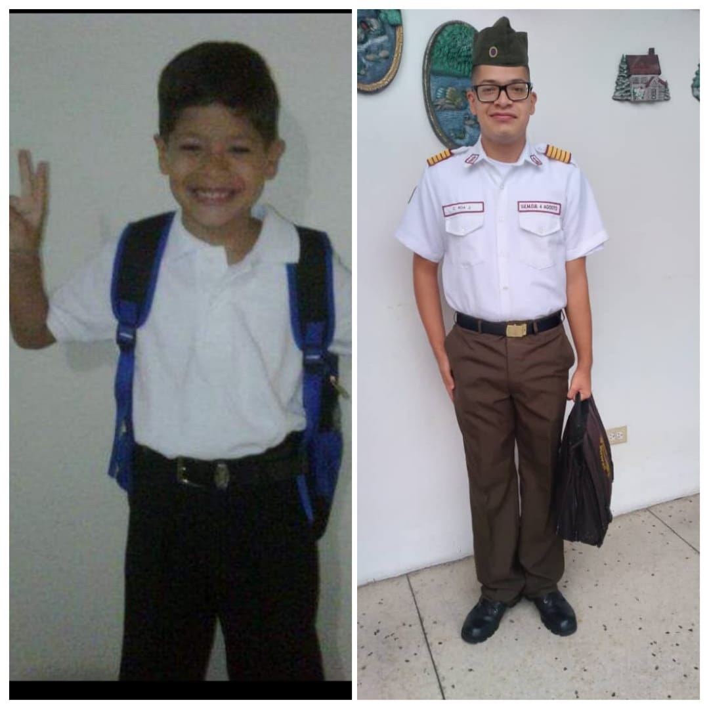
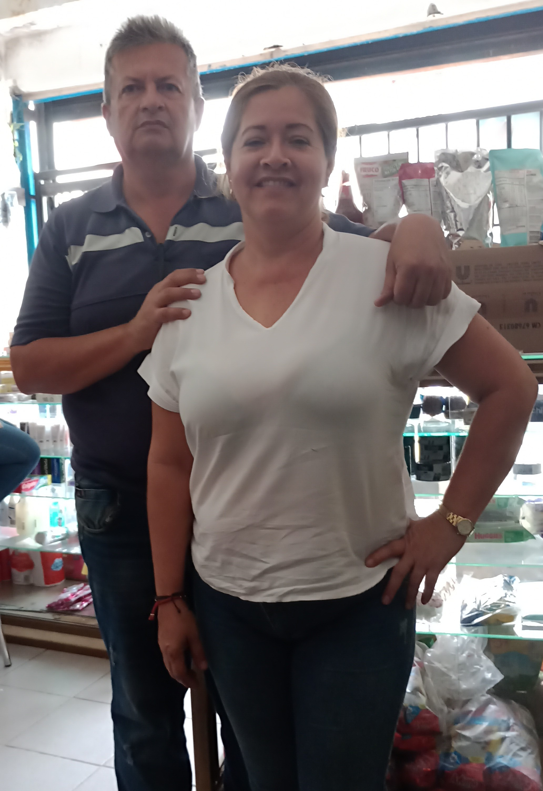
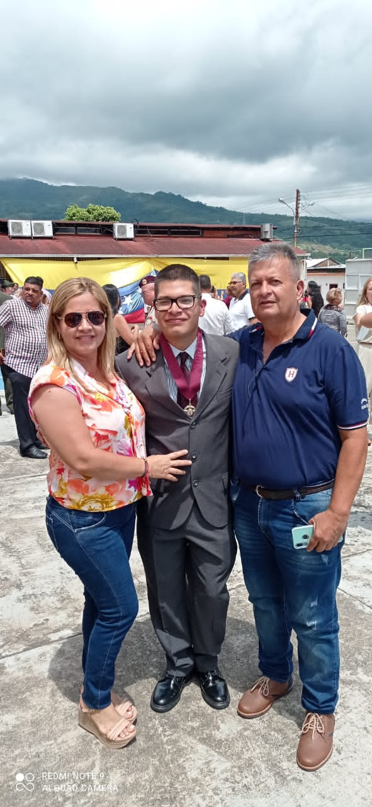
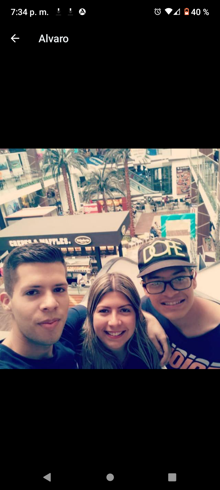
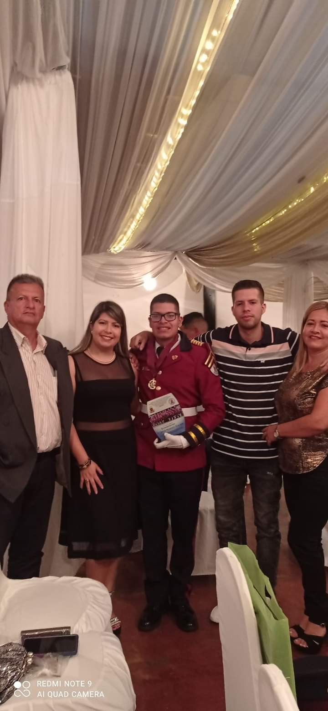

Yo soy Carlos Alejandro Roa Jara tengo 18 años de edad, nací el 10 de marzo de 2005 en San Juan de Colon Estado Táchira. Mi familia está integrada por 5 personas, mi papa que se llama Álvaro Gerardo Roa Molina, mi mama Ludovina Jara Fuentes, mi hermana mayor Viviana Alejandra Roa Jara, mi hermano mayor Álvaro Alejandro Roa Jara y yo soy el menor de mis hermanos. Yo viví la mayor parte de mi vida en la urbanización ríos reina ubicada en la San Juana, Colon Municipio Ayacucho, junto con mis hermanos y mis padres, pero hace 3 años me mude a la casa de mi tía y mi abuelo. Mientras vivía en la urbanización Ríos Reina, estudie en la escuela de educación primaria la San Juana o N.E.R 528 hasta el año 2017, y el mismo año entre a estudiar educación secundaria en el liceo militar 4 de agosto , me gradué el 14 de julio de 2022 y actualmente estoy estudiando en el I.U.T.A.I. Mi familia me ha enseñado valores como: no ser grosero con las personas, ser puntual, ser responsable, respetar las personas mayores, entre otros. Durante mi vida he realizado actividades que me gustaron como los cursos de artesanía que son los que más recuerdo de mi infancia, y otros que no me gustaron como los vinculados a música y arte. En mis tiempos libres suele hacer mayormente actividades que me distraigan o me entretengan como por ejemplo: bicicleta, caminar, leer algunas veces, entre otras. Sábado y en los domingo dormir o relajarme y hacer las tareas o los deberes. Yo suele vender refrescos para ganarme algo para mis gastos personales, y ayudar a mis padres en sus trabajos. Me considero como alguien que tiene defectos como igualmente virtudes, ejemplo: dar lo mejor posible en cualquier cosa que me dedique, ser mejor persona, entre muchas otras. Actualmente mi meta es alcanzar la ingeniería en informática.





